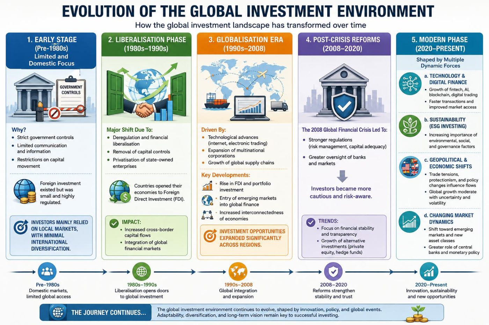
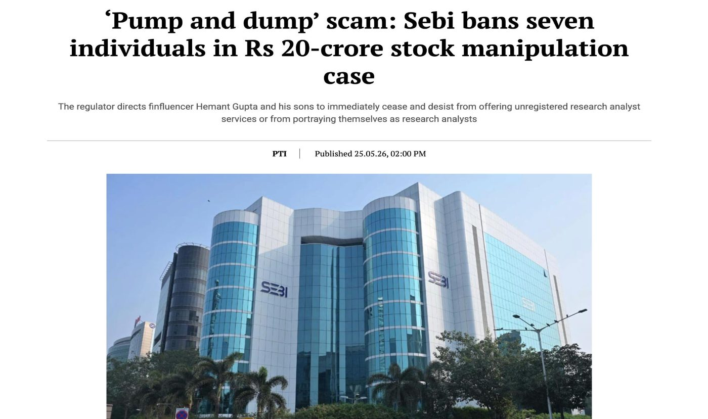
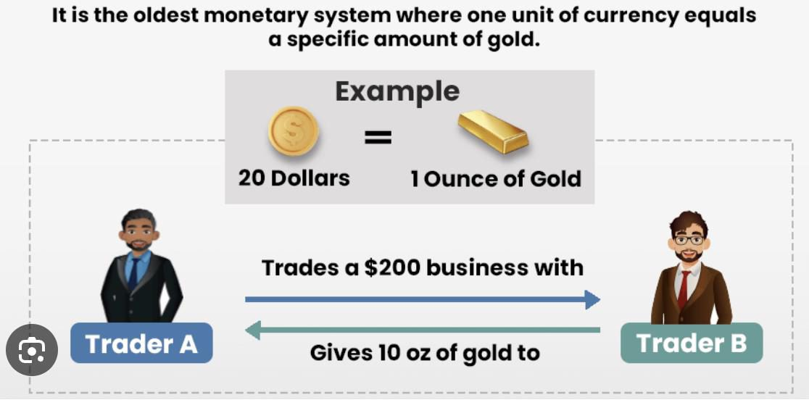
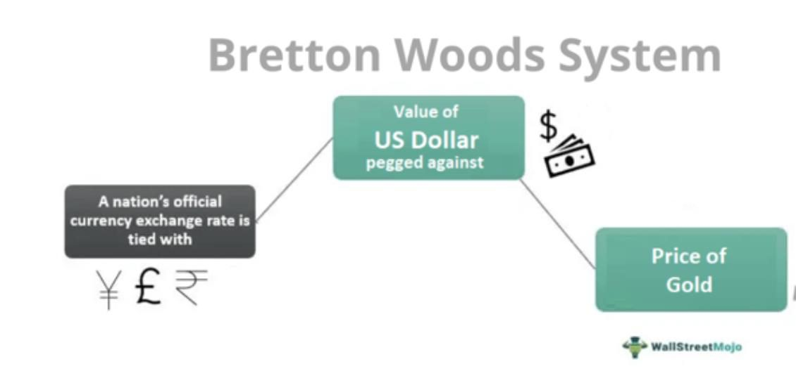
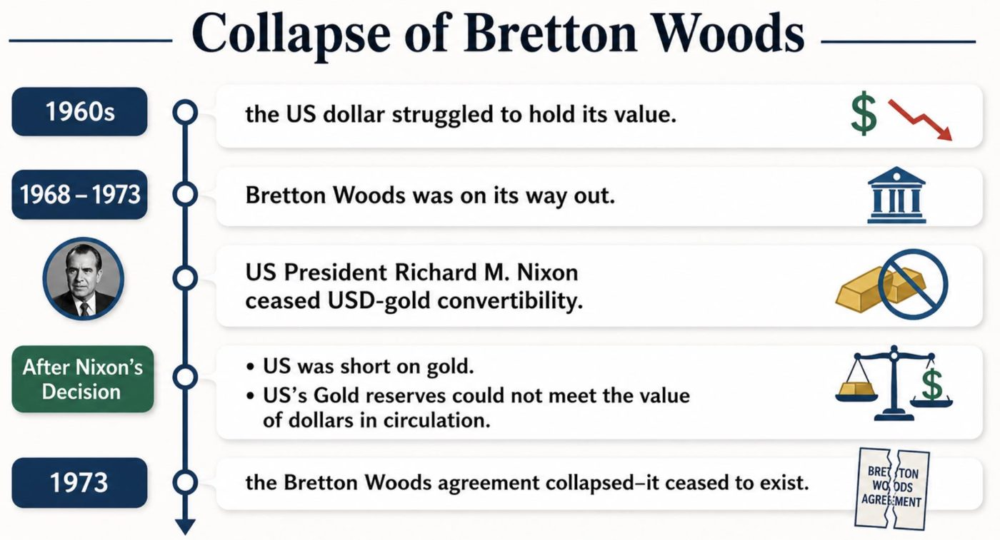
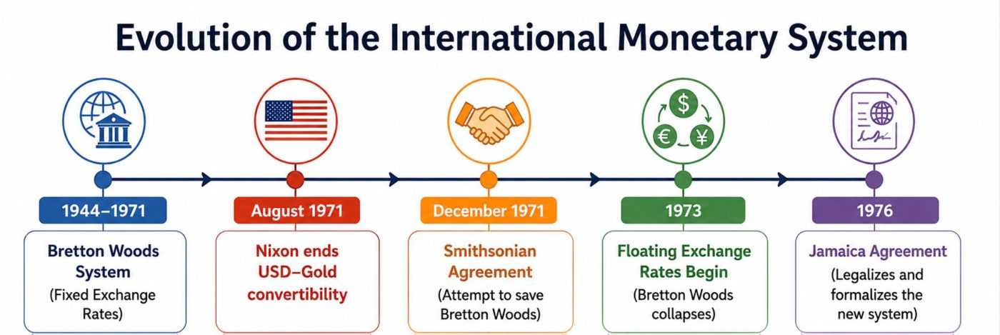
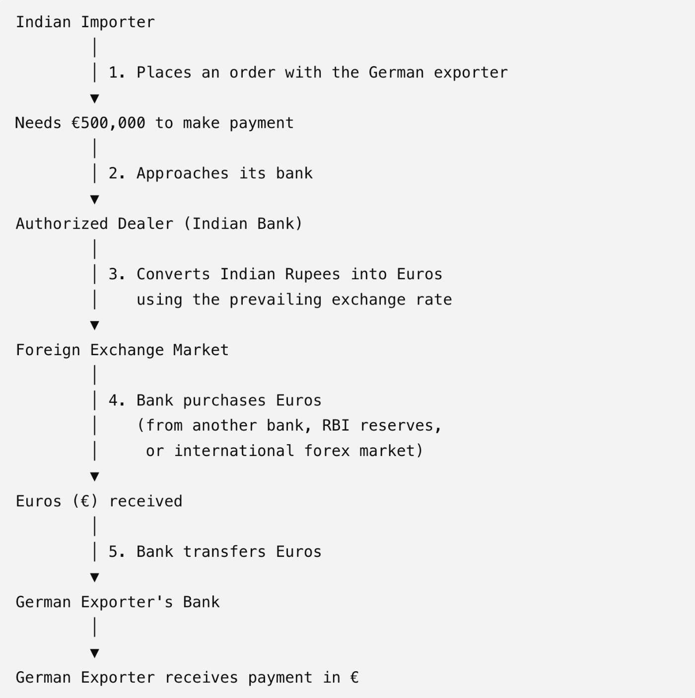
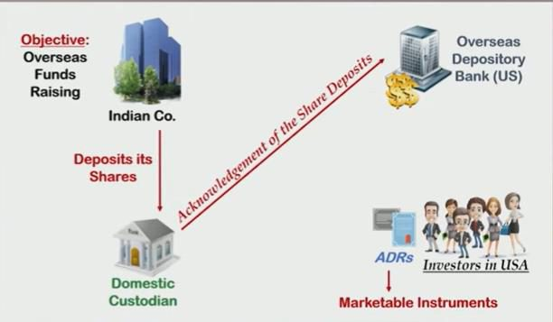

From the prof's slides (T1). Extra theory from the class notes is at the end, marked Class notes.
Ice Breaker Activity
"If you suddenly receive ₹1 Crore, would you invest only in India or across different countries? Why?"
Invest Only in India
Invest Globally
Reason
Reason
"This is exactly why global investment markets exist - to provide investors access to opportunities beyond their domestic market."
Global Investment Environment
Meaning: The global investment environment refers to the economic, political, financial, technological, legal, and social conditions that influence investment decisions across countries.
Factors Influencing Global Investments
Economic Factors
GDP Growth
Inflation
Interest Rates
Exchange Rates
Political Factors
Government stability
Trade policies
Tax regulations
Technological Factors
Digital trading platforms
FinTech innovations
Artificial Intelligence
Case Study: GlobalTech Inc. Evaluates Investment in India
GlobalTech Inc., a US-based multinational company specializing in Artificial Intelligence, FinTech solutions, and cloud computing, plans to establish a new Asia-Pacific headquarters and manufacturing facility.
The company has shortlisted three countries:
India
Vietnam
Indonesia
The Board must evaluate which country offers the most favorable investment environment. As consultants, you have to analyze India based on the following factors and recommend whether GlobalTech should invest in India.
Stability of the Government
Flexibility in Government Policies
Proactive Government Measures (Infrastructure)
Exchange Rate Stability
Tax Policies and Concessions
Scope of the Market
Other Favorable Location Factors (Logistics and Labor)
Return on Investment (ROI)
Technological Factors: A. Digital Trading Platforms, B. Fintech Innovations, C. Artificial Intelligence
Factor 1: Stability of the Government
World's largest democracy.
Regular elections with peaceful transfer of power.
Stable governance structure.
Independent judiciary and regulatory institutions.
Continued emphasis on "Make in India" initiatives.
Expansion of Production Linked Incentive (PLI) schemes.
Sustained focus on digital transformation and infrastructure development Despite Global Disruptions
Government stability reduces uncertainty and lowers political risk. Investors gain confidence that major projects requiring long-term commitments will not be abruptly disrupted.
Factor 2: Flexibility in Government Policies
"If government policies are rigid and approval takes 5 years, will investors wait?"
Liberalized FDI norms
Ease of Doing Business reforms
Production Linked Incentive (PLI) Scheme
Startup India initiative
Regulatory sandboxes.
Companies like:
Razorpay,
Groww,
Zerodha,
India's Dedicated Freight Corridors (DFCs)
India's Dedicated Freight Corridors (DFCs) are a high-speed, high-capacity electrified railway network built exclusively for freight trains, managed by the Dedicated Freight Corridor Corporation of India (DFCCIL). The 2,843-km core network includes the Western DFC (Dadri to JNPT) and the Eastern DFC (Ludhiana to Sonnagar), which are completely operational.
Post on the Western DFC running double-stack container trains (1 train = 270 trucks, zero diesel).
Imagine transporting products from Bengaluru to Europe.
What infrastructure is needed?
Roads
Ports
Airports
Warehouses
Internet connectivity
Better infrastructure reduces logistics costs and improves efficiency.
Factor 3: Proactive Government Measures (Infrastructure)
Scenario: GlobalTech needs: (Airports, Highways, Ports, Reliable electricity, Data centers)
Government investments:
Bharatmala Project
Sagarmala Project
Smart Cities Mission
Expansion of Metro Networks
Digital India
Factor 4: Exchange Rate Stability
Although the Indian Rupee experiences periodic depreciation against the US Dollar, the Reserve Bank of India actively intervenes to minimize excessive volatility.
India maintains:
Significant foreign exchange reserves.
Prudent monetary management.
Controlled capital account mechanisms.
Global Investment Perspective
Relative exchange rate stability enables better forecasting of future cash flows and reduces currency risk.
Stable exchange rates reduce currency risk and enhances investor confidence
Factor 5: Tax Policies and Concessions
India has implemented several tax reforms:
Reduction in corporate tax rates.
Concessional tax rates for new manufacturing units.
Goods and Services Tax (GST) replacing multiple indirect taxes.
Tax incentives under various industrial schemes.
Special Economic Zone benefits.
Example: Micron Technology, announced major investments supported by government incentives.
Factor 6: Scope of the Market
Why do Apple, Amazon, Google, and Walmart invest heavily in India?
Scenario: GlobalTech wants a large customer base.
Netflix in India
Netflix initially targeted premium consumers. However, India's enormous and diverse market pushed it to introduce:
mobile-only plans,
regional language content,
affordable subscriptions.
Population exceeding 1.4 billion.
Growing middle class.
Increasing internet users.
Rapid urbanization.
Factor 7: Other Favorable Location Factors (Logistics and Labor)
Why do companies like Goldman Sachs, JPMorgan Chase, Infosys, TCS, Google, Microsoft, and Accenture maintain large operations in India?
Based on the factors discussed, would you recommend India as the preferred investment destination? Which three factors most strongly support your recommendation, and which two factors pose potential risks?
Activity: "Which country would you choose for investment and why?" India / China / UAE
Evolution and Significance of the Global Investment Environment
Sources: Historical anchors from Federal Reserve History; current context from IMF, UNCTAD, World Bank, WTO and BIS.
It is the combination of markets, institutions, rules, risks and opportunities that influence where and how capital moves across borders.
Key capital channels
FDI (ownership and control)
Portfolio investment (equities and bonds)
Bank lending and project finance
Venture capital, infrastructure and private markets
Main actors
Multinational enterprises
Institutional investors and banks
Central banks
Multilateral institutions and regulators
Core drivers
Growth and inflation outlook
Exchange rates, interest rates and liquidity
Trade rules, taxes, sanctions and screening
Technology, sustainability and geopolitics
Evolution Overview
Pre-1980: Restricted
1980-90: Liberalisation
1990-2008: Globalisation
2008-20: Reforms
2020+: Digital phase

Evolution of the Global Investment Environment (click to enlarge).
Stage
What the slide says
1. Early Stage (Pre-1980s) Limited and Domestic Focus
Why? Strict government controls; Limited communication and information; Restrictions on capital movement. Foreign investment existed but was small and highly regulated. Investors mainly relied on local markets, with minimal international diversification.
2. Liberalisation Phase (1980s–1990s)
Major shift due to: Deregulation and financial liberalisation; Removal of capital controls; Privatisation of state-owned enterprises. Countries opened their economies to Foreign Direct Investment (FDI). Impact: Increased cross-border capital flows; Integration of global financial markets.
3. Globalisation Era (1990s–2008)
Driven by: Technological advances (internet, electronic trading); Expansion of multinational corporations; Growth of global supply chains. Key developments: Rise in FDI and portfolio investment; Entry of emerging markets into global finance; Increased interconnectedness of economies. Investment opportunities expanded significantly across regions.
4. Post-Crisis Reforms (2008–2020)
The 2008 Global Financial Crisis led to: Stronger regulations (risk management, capital adequacy); Greater oversight of banks and markets. Investors became more cautious and risk-aware. Trends: Focus on financial stability and transparency; Growth of alternative investments (private equity, hedge funds).
5. Modern Phase (2020–Present) Shaped by multiple dynamic forces
a. Technology & digital finance: Growth of fintech, AI, blockchain, digital trading; Faster transactions and improved market access. b. Sustainability (ESG investing): Increasing importance of environmental, social, and governance factors. c. Geopolitical & economic shifts: Trade tensions, protectionism, and policy changes influence flows; Global growth moderate with uncertainty and volatility. d. Changing market dynamics: Shift toward emerging markets and new asset classes; Greater role of central banks and monetary policy.
The journey continues... The global investment environment continues to evolve, shaped by innovation, policy, and global events. Adaptability, diversification, and long-term vision remain key to successful investing.
Why the global investment environment matters
The significance for economies, firms and society
Growth
Investment expands productive capacity and can raise productivity.
Jobs
Weak investment delays job creation, especially in developing economies.
Technology
FDI and GVC participation can transfer know-how, management and skills.
Infrastructure
Project finance is crucial for energy, transport and water systems.
Resilience
Diversified capital sources can reduce vulnerability, but sudden stops create risk.
Sustainability
Investment choices influence the pace of the green and digital transition.
Sources: World Bank: GVC participation can boost growth, jobs and technology adoption; UNCTAD: weak FDI means jobs not created and infrastructure not built; OECD: FDI is central to global economic integration; World Bank June 2025: subdued FDI into EMDEs limits job creation and poverty reduction.
International Capital Markets
International capital markets are interconnected global financial networks where governments, corporations, and institutional investors buy and sell long-term financial instruments such as equities, bonds, and derivatives across national borders.
They facilitate the efficient flow of capital from surplus to deficit regions.
Key Functions & Purpose
Capital Sourcing: Allow companies and governments to raise funds outside their domestic borders, often accessing larger pools of capital or securing lower borrowing costs.
Risk Diversification: Enable investors to spread risk across different geographies and asset classes, protecting portfolios from localized economic downturns
Global Liquidity: Guarantee that funds move freely to locations where they are most efficiently utilized, supporting global economic growth and development
Help companies raise capital by issuing securities
Provide loans and may also participate in securities issuance
Help investors buy and sell securities
Guarantee the sale of securities during an issue
Safely hold investors' securities and settle transactions
Situation
A company wants help conducting its IPO.
Investors subscribe to only 80% of a share issue. Who buys the remaining shares?
An investor places an order to buy shares through an online trading platform.
A mutual fund needs a bank to safely hold its securities and process dividends.
Experts determine that an IPO should be priced at ₹450 per share after studying the company's financials.
A trader wants to sell shares immediately, and a financial institution buys them to maintain liquidity.
D. Regulatory Authorities
Examples
India – Securities and Exchange Board of India (SEBI)
U.S. – Securities and Exchange Commission (SEC)
UK – Financial Conduct Authority
Functions
Investor protection.
Disclosure requirements.
Market surveillance.

"'Pump and dump' scam: Sebi bans seven individuals in Rs 20-crore stock manipulation case". The regulator directs finfluencer Hemant Gupta and his sons to immediately cease and desist from offering unregistered research analyst services or from portraying themselves as research analysts. (PTI, 25.05.26)
Situation
Situation
A company hides huge losses from investors.
A promoter cheats investors through a fake investment scheme.
A director buys shares before announcing a merger using confidential information.
A company announces quarterly results to all investors through the stock exchange.
A group of traders artificially inflates a stock price.
Functions
Investor protection.
Disclosure requirements.
Market surveillance.
E. Credit Rating Agencies
Examples
Moody's
S&P Global Ratings
Fitch Ratings
Functions
Assess credit risk.
Assign ratings.
Influence borrowing costs.
Facilitate investor decision-making.
Situation
Situation
A rating agency studies a company's profits, debt, and cash flows.
A company receives a AAA rating.
A company with a BB rating pays 13% interest on its bonds.
An investor selects a AAA-rated bond because it is considered safer.
A company's rating is downgraded after a decline in its financial performance.
Functions
Assess credit risk.
Assign ratings.
Influence borrowing costs.
Facilitate investor decision-making.
Risks in International Capital Markets
Exchange rate risk.
Interest rate risk.
Political risk.
Sovereign risk.
Regulatory risk.
Liquidity risk.
Credit/default risk.
Importance of International Capital Markets
Benefits to Borrowers
Larger pool of funds.
Lower cost of capital.
Access to multiple currencies.
Flexibility in financing.
Improved international visibility.
Benefits to Investors
International diversification.
Better risk-return opportunities.
Access to emerging markets.
Currency gain opportunities.
Benefits to Economies
Efficient allocation of global savings.
Economic growth.
Infrastructure development.
Promotion of international trade.
Major Market Participants
Institutional Investors: Pension funds, hedge funds, mutual funds, and insurance companies that manage large pools of capital and seek international diversification.
Commercial and Investment Banks: Crucial intermediaries that underwrite securities, facilitate trades, and help entities navigate regulatory hurdles
Multinational Corporations (MNCs): Issuers of debt and equity that utilize global markets to finance international expansion and manage global supply chains
Central Banks and Governments: Key actors who issue sovereign debt and enforce macroeconomic and monetary policies that impact global capital flows.
International Monetary System
The International Monetary System (IMS) is the set of rules, institutions, and agreements that govern
Exchange rates
International payments
Capital flows
Foreign exchange markets
It ensures that countries can trade and invest with one another smoothly.
Evolution of the International Monetary System
Four Stages:
The Gold standard, 1870-1914
The Inter-war Years, 1914-1944
The Bretton Woods System, 1945-1973
Flexible Exchange Rate Regime since 1973
The Gold standard, 1870-1914
In the early days, gold was used as a storage of wealth and as a medium of exchange.
The fundamental principle: Each country should set a par value for its currency in terms of gold.
The exchange rate between any two currencies was determined by their gold content.
The first universally implemented system for valuing currencies.
Promoted by banks of England.
Adopted by UK in 1821, Germany in 1875, France in 1878, U. S. in 1879, Russia in 1897.
Lasted for about 40 years as an international monetary system.

"It is the oldest monetary system where one unit of currency equals a specific amount of gold." Example: $20 = 1 ounce of gold, so a $200 trade is settled with 10 oz of gold.
For example
if the dollar is pegged to gold at $30 = 1 ounce of gold, and the British pound is pegged to gold at £6 = 1 ounce of gold, the exchange rate is determined by the relative gold contents:
$30 = £6 ⇒ $5 = £1
Meaning
The gold standard is a monetary system in which the value of currencies were pegged to gold at a fixed rate. With the gold standard, countries agree to convert paper money into a fixed amount of gold.
The key elements of the gold standard are;
The government of each country defines its national monetary unit in terms of gold.
Only gold to be used for international payments.
Free import or export of gold.
Two-way convertibility between gold and national currencies. (A country's currency can be exchanged for gold and vice versa at a fixed rate.)
The above conditions were met during the period 1870 to 1914.
Features of Gold Standards System
Each country was required to establish a central bank with an exclusive authority to print and issue their respective currency notes.
The country's gold reserves were required to be in the custody of the central bank.
Each central bank was required to announce an official price of gold
Each currency note was required to contain an irrevocable promise to redeem the note on demand against specified quantity of gold.
The total value of currency notes in circulation was required to be limited to the value of gold with the central bank.
Advantages of gold standard
Simple monetary standard.
It received positive views of the public much more than any other standard.
Price Stability (Gold forms the currency base and the prices of gold do not fluctuate much)
Exchange Rate stability. (The value of each country's currency was directly tied to a specific amount of gold, and currencies could be freely exchanged for gold at fixed rates)
Trade balance and automatic adjustment mechanism.
Gold standard cannot be secretly tempered with by the independent will of the government.
Disadvantages of gold standard
Not always Simple
One serious defect in this system was that it worked smoothly in the period of peace, and prosperity while in the period of war and economic crises it has always failed.
Gold standard is an expensive standard and a luxury which all the countries cannot afford because a lot of precious metal is wasted.
Under Gold standard the automatic working of the economic system is considered as a demerit.
In the Gold standard independent monetary policy is adopted.
Gold Standard period ____________ Ans: 1870 to 1914
World War started in which year __________ Ans: 1914
Suspension of Gold Standard
The Financial Burden of World War I (Rising Military Expenditures vs Gold standard limitations)
Strained political relations (prevented free flow of gold effected the automatic adjustment in external balance)
Need for Monetary Flexibility
The Role of the U.S. Dollar and the Shift to Fiat Money. (central currency in international finance).
Post-War Transition to Fiat Currency: Many countries continued to rely on fiat money (currency not backed by gold)
2. The Inter-war Years, 1914-1944
The time between World War I and World War II, from 1915 to 1944.
Currency depreciations: Countries used currency depreciations to gain an advantage in the export market.
Exchange rates become unstable.
International trade becomes uncertain.
Countries often add tariffs and import restrictions to protect domestic industries.
Global trade contracts.
Attempts to restore the gold standard: Countries tried to restore the gold standard, but lacked the political will.
U. S. became the world's dominant financial power: The U.S. replaced Britain as the world's dominant financial power.
Sterilization of gold: Mechanism a central bank offsets the impact of gold inflows or outflows on the domestic money supply, preventing the automatic adjustment mechanism of the gold standard from working. (Gold moves, but the money supply does not.)
Bretton Woods System (1945 to 1973)
The Bretton Woods system was an international monetary agreement to revitalize international trade by standardizing exchange rates across the globe.
BWS: An international monetary exchange arrangement.
The system fixed currencies belonging to 44 countries against the value of the US dollar.
The US dollar itself was pegged against the price of gold.
Initially, one ounce of gold was worth $35.

A nation's official currency exchange rate (¥ £ ₹) is tied with → the value of the US Dollar, which is pegged against → the price of gold.
On July 01, 1944, 730 delegates from 44 countries attended the United Nations Monetary and Financial Conference held in Bretton Woods, New Hampshire.
Purpose of Conference: Providing consent to a new international monetary system (a collective strategy to recover from the impact of World War II.)
The allied countries duly accepted the Bretton Woods Agreement. (Canada, Mexico, Russia, Brazil, China, India, Netherlands, Poland, Belgium, Chile, and Czechoslovakia were the active member nations).
In December 1945, the BWA led to the formation of two Bretton Woods Institutions
IMF
The International Monetary Fund regulates global exchange rates. (facilitates economic cooperation internationally).
World Bank
The World Bank to help nations recover from World War II. The International Bank for Reconstruction and Development is the lending arm of the World Bank.
Features - BWS
Primary Objective: Stabilizing international exchange rates.
Attempt to help nations recover economically post-World War II.
Bretton Woods was adopted by 44 countries-they agreed to peg their currencies against the USD.
The US Dollar was pegged against the price of gold-fixed at $35 per ounce of gold.
The US Dollar was considered-an international reserve currency.
It provided a fixed exchange rate. However, this rate was adjustable.
It standardized international monetary payments by facilitating currency conversion.
The Bretton Woods arrangement failed due to the following reasons
The system depleted US gold reserves-as more and more US dollars were issued to meet international demand.
In the 1960s post-Vietnam War, the US struggled with inflation. Its current account balance was low; therefore, the government decided to discontinue this system.
Lacked proper adjustment mechanism for the balance of payments.
There was a deficit balance of payment in the US. Meanwhile, there was a huge demand for the US dollar worldwide, resulting in liquidity issues.
Finally, in response to inflation and the current account balance deficit, the government declared restrictions on gold-dollar conversions.

Collapse of Bretton Woods: 1960s the US dollar struggled to hold its value → 1968–1973 Bretton Woods was on its way out → US President Richard M. Nixon ceased USD-gold convertibility → After Nixon's decision: US was short on gold; US's gold reserves could not meet the value of dollars in circulation → 1973 the Bretton Woods agreement collapsed, it ceased to exist.
Advantages of BWS
Stability and Predictability in Exchange Rates
a) Fixed Exchange rate: Currencies were pegged to the U.S. dollar, which itself was tied to gold. Exchange rate stability. Reduce exchange rate volatility in international trade and investment
b) Reduced Exchange Rate Risk: Businesses and investors did not have to worry about the fluctuating value of foreign currencies
Promoted International Trade and Economic Growth: (Reconstruction of War-Torn Economies)
Prevented Competitive Devaluations. Exchange Rate Discipline: The fixed exchange rate system prevented countries from engaging in competitive devaluations (where countries deliberately devalue their currencies to boost exports)
U.S. Dollar as a Reserve Currency: The U.S. dollar's peg to gold gave confidence to the international community in its stability, making it the primary global reserve currency.
International Financial Institutions (IMF and World Bank)
Disadvantages of BWS
Dependence on the U.S. Dollar and Gold: Any instability in the U.S. economy, fiscal policy, or monetary policy could create problems for the entire global financial system.
Gold Convertibility Issues: The U.S. faced growing pressure to maintain gold reserves to back the dollar. As global demand for U.S. dollars grew, the U.S. found itself unable to maintain the gold peg, ultimately leading to the collapse of the system.
Rigid Exchange Rate Mechanism: Less flexibility to adjust their exchange rates in response to changing economic conditions.
Unilateral Actions and Lack of Coordination: Nixon Shock (1971): Nixon unilaterally suspended the dollar's convertibility into gold, which undermined the stability of the entire system.
Limits on Developing Countries: Lack of Policy Autonomy: The fixed exchange rate system limited the ability of developing countries to manage their own monetary policies.
Post BWS
Post Bretton Woods breakdown, countries did not need to peg currencies against USD or gold prices.
Central banks regulated the supply of money in their respective countries.
Smithsonian Arrangement
Reason: Turbulence in the international financial system, particularly the BWS
Smithsonian Agreement: A landmark accord signed in December 1971 during a conference held at Smithsonian Institution in Washington, D.C.
Actions Taken
Outcome
Realignment of par value of currencies, i.e gold parity of U. S. dollar changed from 35 to 38.02 per ounce, entailing a devaluation of 8.57 per cent.
Despite the devaluation of the dollar by 8.57% under the agreement, the fundamental issue of excessive U.S. dollar supply remained unresolved.
The band for the fluctuation from the par value widened from +/-1.0 percent to +/-2.25% - to provide more freedom to member countries to manage their exchange rate.
Narrow range of fluctuation (1-2.25%) for the major currencies, but this did not provide enough flexibility to deal with the changing realities of the global economy.
The Smithsonian Agreement's failure highlighted the limits of the Bretton Woods system and led directly to the adoption of floating exchange rates starting in 1973.

1944–1971 Bretton Woods System (Fixed Exchange Rates) → August 1971 Nixon ends USD–Gold convertibility → December 1971 Smithsonian Agreement (Attempt to save Bretton Woods) → 1973 Floating Exchange Rates Begin (Bretton Woods collapses) → 1976 Jamaica Agreement (Legalizes and formalizes the new system)
Smithsonian Agreement (1971)
Jamaica Agreement (1976)
Purpose
Save Bretton Woods
Establish the post-Bretton Woods system
Exchange Rate
Fixed rates with wider bands
Countries free to choose exchange rate regime
Gold
Dollar still linked to gold at a new parity
Gold removed from the international monetary system
Outcome
Failed
Became the foundation of the modern monetary system
Flexible Exchange Rate Regime
The exchange rate is not fixed by government authorities rather it is determined by the forces of market i.e. supply and demand of the currencies in the international market).
Free Float System
Under this system, the exchange rate is determined solely by the market forces and it does not involve intervention. Also known as clean float or independent float system.
Managed Float System
A country's monetary authorities interfere directly or indirectly to stabilize the exchange rate and to keep it within desired limits. It is also known as dirty floating.
Direct intervention: the monetary authorities attempt to stabilize the exchange rate by purchasing and selling foreign currency in the domestic market.
Indirect intervention: the monetary authorities bring changes in the interest rates to stabilize the exchange rates
Crawling Peg System
A synthesis of fixed and floating exchange rate system.
A crawling peg is a system where the government or central bank adjusts the exchange rate gradually and regularly, usually by small amounts, instead of making sudden large devaluations.
Involves periodic adjustment of fixed exchange rate to catch up with the market determined rates.
Free Float
Managed Float
Crawling Peg
Who determines the exchange rate?
Market forces only
Market forces with occasional central bank intervention
Central bank adjusts the rate gradually according to a policy
Central bank intervention
None or very rare
Occasional
Regular and planned
Exchange rate movement
Can fluctuate widely
Moderate fluctuations
Small, gradual adjustments
Stability
Lowest
Moderate
High
Predictability
Low
Medium
High
Example
US Dollar
Indian Rupee
Historically used by Chile and Colombia
Fluctuating exchange rate
Refers to the constant changes in the value of a currency relative to another currency or basket of currencies due to market forces of supply and demand in the foreign exchange (forex) market.
It's essentially the opposite of a fixed or pegged exchange rate (the currency's value is tied to another currency, like the U.S. dollar or gold).
Fluctuating exchange rate regime is a broader term: Freely floating currencies + and managed or dirty floats (but still allows the market to influence the rate).
Features of a Fluctuating Exchange Rate
Market-Driven
Frequent Changes
No Government Control (except: Managed float system)
Flexibility
International Financial Markets and Institutions
International Financial Market
Foreign Exchange Market
International Money Market
International Capital Market
International Equity Market
International Bond Market
Foreign Currency Market
International Derivative Market
Structure of International Capital Markets
International Capital Markets
International Bond Market
International Equity Market
Examples:
Bond Type
Country
Yankee Bonds
United States
Samurai Bonds
Japan
Bulldog Bonds
United Kingdom
Maple Bonds
Canada
Foreign Exchange Market
An Indian company importing machinery from Germany needs Euros (€). How do they get it? Machinery cost = €500,000. Exchange rate = €1 = ₹100. Starting from Placing an order to making payments to German Exporter.

Indian Importer → (1) places an order with the German exporter → needs €500,000 to make payment → (2) approaches its bank → Authorized Dealer (Indian Bank) → (3) converts Indian Rupees into Euros using the prevailing exchange rate → Foreign Exchange Market → (4) bank purchases Euros (from another bank, RBI reserves, or international forex market) → Euros received → (5) bank transfers Euros → German Exporter's Bank → German Exporter receives payment in €.
Importer demands foreign currency (Euros).
The bank supplies Euros by using the Foreign Exchange Market.
The importer pays in Rupees; the exporter receives Euros.
This transaction creates demand for Euros and supply of Rupees in the foreign exchange market.
Where do the Euros come from?
Exporters in India who earned Euros and sold them to the bank.
Other commercial banks dealing in foreign currencies.
Its own foreign currency reserves or correspondent bank accounts abroad.
International interbank foreign exchange markets.
Foreign Exchange (Forex) Market
An Indian importer purchases US dollars to pay an American supplier.
The world's largest financial market.
Functions
Currency conversion
Hedging exchange rate risk
International payments
Speculation
Participants
Commercial banks
Central banks
Corporations
Investors
Governments
Eurocurrency Market
A market where currencies are deposited outside their home country.
Benefits:
Lower regulations
Competitive interest rates
Large borrowing capacity
International Money Market
Deals with short-term funds (less than one year).
Instruments
Treasury Bills
Commercial Paper
Certificates of Deposit
Interbank Loans
Repurchase Agreements (Repos)
International Capital Market
Deals with long-term funds (more than one year).
It consists of:
i. International Equity Market – Companies raise funds by issuing shares internationally.
Examples
American Depositary Receipts (ADR)
Global Depositary Receipts (GDR)
Cross-border IPOs
International Bond Market
Companies and governments issue bonds in foreign markets.
Types:
Foreign Bonds
Eurobonds
A foreign bond is a debt instrument issued by a foreign entity in a host country's domestic market, denominated in that host country's currency.
A Eurobond is an international bond denominated in a specific currency but sold in countries other than the one that issued that currency
International Derivatives Market
An Indian automobile manufacturer expects the Japanese Yen to appreciate before making payment to its supplier. To hedge the risk, it buys Japanese Yen futures contracts on the Chicago Mercantile Exchange (CME).
Used for managing financial risk.
Products include
Futures
Options
Swaps
Forward Contracts
Purpose
Hedge currency risk
Hedge interest rate risk
Price discovery
International Financial Institutions
A. International Monetary Fund
Established: 1944
Functions:
Maintains international monetary stability
Provides balance of payments assistance
Monitors exchange rate policies
Offers technical assistance
Provides economic surveillance
Example: The IMF provides financial assistance to countries facing foreign exchange crises.
B. World Bank
Established: 1944
Functions:
Poverty reduction
Infrastructure financing
Education funding
Healthcare projects
Economic development
Example: Financing highways, power plants, and water supply projects.
C. Bank for International Settlements
Known as the "Central Bank for Central Banks."
Functions:
Promotes monetary cooperation
Develops banking standards
Supports financial stability
Coordinates among central banks
D. Asian Development Bank
Established: 1966
Functions:
Infrastructure financing
Sustainable development
Poverty reduction
Climate finance
Regional integration
Focus: Asia-Pacific countries.
E. Asian Infrastructure Investment Bank
Functions:
Infrastructure financing
Energy projects
Transportation
Urban development
F. New Development Bank
Established by the BRICS countries.
Functions:
Infrastructure development
Sustainable development projects
Renewable energy financing
From the class notes
The course plan lists "balance of payments and capital flows" under Unit 1, but the T1 slides have no BOP section. It was taught in class (notes dated 23 and 27 July). Everything below comes from your notebooks and photos.
Balance of Payments (BOP): meaning
BOP is a systematic record of all economic transactions between the residents of a country and the rest of the world during a specific period (usually one year).
Economic transactions:
Exports and imports of goods and services.
Capital inflows and outflows.
Gifts and other transfer payments and changes in a country's international reserves.
A transaction enters the BOP only when one side is a resident and the other side is a non-resident. So when an Indian subsidiary of a French company borrows from the Indian public, nothing is recorded: both parties are Indian residents (Q4, item 7 below).
BOP statement format
The outline from the notes:
Transactions
Credit
Debit
I. Current a/c
Export
Import
Remittance
II. Capital a/c
FDI
FPI
BOP deficit / Surplus
____
____
III. Official Reserve a/c
In the worked solutions this is laid out in more detail, with three columns: Debit (Payments), Credit (Receipts) and Net.
A. Current account
Goods: exports and imports of goods
Services: tourism, medical tourism, software, travel agency bills
Primary income: interest, dividend, share of profit from a joint venture
Secondary income: remittances sent home or abroad, gifts
The notes group primary and secondary income together under "Unilateral transfers".
B. Capital account
FDI inflow / outflow
FPI (portfolio, e.g. buying bonds)
Short-term borrowing (including trade credit on imports)
Long-term liabilities (e.g. part of a machine paid after 3 years)
Bills of exchange and bank deposits abroad
C. Official reserve account
Takes the overall balance (A + B) so that the statement closes at zero. One set of notes calls it "Reserve A/c" or "Capital Reserve A/c", with the line "Change in reserves".
Overall deficit → decrease in forex reserves, shown on the credit side
Overall surplus → increase in forex reserves, shown on the debit side
Statement of Sources and Uses of foreign exchange
Before the BOP statement, every question first prepares a statement of sources and uses. Each transaction is tagged current a/c or capital a/c and placed in one column:
Sources (Receipts): anything that brings foreign exchange in. Exports of goods and services, income received from abroad, remittances into India, foreign investment into India, borrowing from abroad.
Uses (Payments): anything that sends foreign exchange out. Imports, interest and dividends paid abroad, remittances out of India, Indian investment abroad.
Net foreign exchange = Total sources − Total uses. A negative figure is a net use of funds (deficit). A positive figure is a net source (surplus).
Transactions with two entries
Some transactions touch both sides, and the notes record each half separately:
Transaction
Entry 1
Entry 2
Export of goods against a bill of exchange
Current a/c, goods: Source
Capital a/c, claim on the foreign buyer: Use
Realisation of the bill and deposit in a foreign bank a/c
Capital a/c, bill realised: Source
Capital a/c, deposit abroad: Use
Import on credit
Current a/c, goods: Use
Capital a/c, short-term borrowing (liability for import): Source
Machine bought, 60% paid now, 40% after 3 years
Current a/c, import of goods (full value): Use
Capital a/c, long-term liability for the 40%: Source
BOP Q1: cotton yarn, medical tourism, JV profit
Indian co. exported cotton yarn worth ₹100
A US co. sold goods worth ₹125 to an Indian co.
A foreigner visited India on medical tourism & spends ₹90.
An Indian citizen visited Germany on tourist visa and spends ₹80
Income received from abroad, as share of profit on joint venture ₹110.
Interest paid to foreign investors on international bonds ₹150
Increase in home country's ownership of assets abroad ₹160.
Increase in foreign ownership of assets in home country ₹200.
Prepare (i) a statement of sources & uses of foreign exchange and (ii) find out the current & capital a/c balance of BOP.
Show solution
No.
Transaction
A/c
Sources
Uses
1
Export of cotton yarn
Current (goods)
100
2
Import of goods
Current (goods)
125
3
Medical tourism (export of service)
Current (services)
90
4
Tourist in Germany (import of service)
Current (services)
80
5
Share of profit on JV
Current (primary income)
110
6
Interest paid
Current (primary income)
150
7
Home ownership of assets abroad (FDI out)
Capital
160
8
Foreign ownership in home country (FDI/FPI in)
Capital
200
Total
500
515
Net foreign exchange = 500 − 515 = −15 (net use of funds).
Particulars
Debit (Payments)
Credit (Receipts)
Net
A. CURRENT ACCOUNT
Goods: export of cotton yarn / import of goods
125
100
−25
Services: medical tourism / Indian tourist spends abroad
80
90
+10
Primary income: share of profit from JV / interest paid
150
110
−40
Total current a/c (A)
355
300
−55
B. CAPITAL ACCOUNT
Increase in foreign ownership in home country
200
Increase in home ownership of assets abroad
160
Total capital a/c (B)
160
200
+40
Overall balance (A + B)
515
500
−15 (deficit)
C. OFFICIAL RESERVE A/C
Decrease in foreign exchange reserves
15
+15
Final balance
515
515
0
Current a/c balance = −55. Capital a/c balance = +40.
BOP Q2 (Illustration 2): BOP statement for India
India exports goods worth ₹3000.
India imports goods worth ₹4000.
Expenditure of foreign tourists in India ₹3000.
India makes interest and dividend payments to a foreign company ₹1000.
An Indian working in USA sends a cheque to India ₹4000.
A UK citizen working in India sends money to UK ₹1000.
IBM invests in India ₹3000.
India buys a German treasury bond ₹5000.
A Swiss resident buys an Indian treasury bond ₹5000.
India borrows ₹8000 for short term.
India telecom invests in UK ₹6000.
The two notebooks disagree on (e) and (f): one has ₹4000 / ₹1000, the other writes ₹1000 / ₹4000 in the question. Both solutions use ₹4000 in and ₹1000 out, so that is what is shown here.
Show solution
No.
Transaction
A/c
Sources
Uses
a
Export of goods
Current
3000
b
Import of goods
Current
4000
c
Expenditure by foreign tourists
Current
3000
d
Interest & dividend payment
Current (primary)
1000
e
Indian working in USA sends cheque
Current (secondary)
4000
f
UK citizen sends money to UK
Current (secondary)
1000
g
IBM invests in India (FDI in)
Capital
3000
h
India buys German bonds
Capital
5000
i
Swiss resident buys Indian bonds (FPI in)
Capital
5000
j
Short-term borrowing
Capital
8000
k
Indian telecom invests in UK (FDI out)
Capital
6000
Total
26000
17000
Net foreign exchange = 26000 − 17000 = +9000.
Particulars
Debit (Payments)
Credit (Receipts)
Net
A. CURRENT ACCOUNT
Goods: export / import
4000
3000
(1000)
Services: foreign tourists in India
3000
Primary: interest & dividend paid
1000
Secondary: remittance into India
4000
Secondary: remittance out of India
1000
Total current a/c (A)
6000
10000
+4000
B. CAPITAL ACCOUNT
FDI inflow: IBM invests in India
3000
India buys German bonds
5000
FPI inflow: Swiss buys Indian bonds
5000
Short-term borrowing
8000
FDI outflow: telecom invests in UK
6000
Total capital a/c (B)
11000
16000
+5000
Overall balance (A + B)
17000
26000
+9000 (surplus)
C. OFFICIAL RESERVE A/C
Increase in foreign exchange reserves
9000
(9000)
Final balance
26000
26000
0
The notebooks stop at the "C. Official Reserve A/c" heading. The last two rows follow the same rule used in Q1, Q3 and Q4: a surplus goes to reserves on the debit side.
BOP Q3: bill of exchange, software exports, import on credit
Export of goods against bill of exchange ₹15,000
Realisation of bill of exchange & deposit in foreign bank a/c.
Export of software services ₹20,000 for cash.
Remittance for medical services availed abroad ₹25,000
Import on credit ₹30,000
Remittance of dividend to abroad ₹5,000.
Prepare the sources & uses statement and the BOP statement.
Show solution
No.
Transaction
A/c
Sources
Uses
1a
Export of goods
Current
15,000
1b
Against bill of exchange (claim on buyer)
Capital
15,000
2a
Realisation of bill of exchange
Capital
15,000
2b
Deposit in foreign bank
Capital
15,000
3
Export of software services
Current
20,000
4
Remittance for medical services abroad
Current
25,000
5a
Import of goods
Current
30,000
5b
Short-term borrowing (liability for import)
Capital
30,000
6
Remittance of dividend abroad
Current (primary)
5,000
Total
80,000
90,000
Net use of funds = (10,000).
Particulars
Debit (Payments)
Credit (Receipts)
Net
A. CURRENT ACCOUNT
Export of goods
15,000
Export of software services
20,000
Import: medical services
25,000
Import of goods
30,000
Primary: dividend paid
5,000
Total current a/c (A)
60,000
35,000
(25,000)
B. CAPITAL ACCOUNT
Bill of exchange (claim on buyer)
15,000
Realisation of bill of exchange
15,000
Deposit in foreign bank a/c
15,000
Short-term borrowing (for import)
30,000
Total capital a/c (B)
30,000
45,000
+15,000
Overall balance (A + B)
90,000
80,000
(10,000) deficit
C. OFFICIAL RESERVE A/C
Decrease in foreign reserves
10,000
+10,000
Final balance
90,000
90,000
0
One notebook writes 80,000 as the Uses total in the first table. The items add to 90,000, which matches the (10,000) net use.
BOP Q4: US corporation and its Indian subsidiary
Prepare a statement of sources & uses of funds and a statement of BOP showing clearly all sub-balances from the following data:
UC Corporation of USA invests in India ₹3,00,000 to modernise its Indian subsidiary.
A tourist from Egypt buys Indian handicrafts worth ₹3,000. He also pays a hotel & travel bill of ₹5,000 to a tourist agency in New Delhi.
The Indian subsidiary of the US corporation remits as usual ₹5,000 as dividend to its parent company in USA.
The Indian subsidiary of the US corporation sells a part of its production in other Asian countries for ₹1,00,000.
An Indian company borrows ₹2,00,000 (to be paid back in a year's time) from the German money market to resolve its urgent liquidity problem.
An Indian company buys a machine for ₹1,00,000 from Japan & 60% payment is made immediately. The remaining amount is to be paid after 3 years.
An Indian subsidiary of a French company borrows ₹50,000 from the Indian public to invest in its modernisation programme.
Show solution
No.
Transaction
A/c
Sources
Uses
i
FDI by UC Corp
Capital
3,00,000
ii a
Egyptian tourist buys handicrafts (goods)
Current
3,000
ii b
Pays tourist agency (service)
Current
5,000
iii
Dividend remitted to parent
Current (primary)
5,000
iv
Export of goods to Asian countries
Current
1,00,000
v
Short-term borrowing from German money market
Capital
2,00,000
vi a
Import of machine (full value)
Current
1,00,000
vi b
40% payable after 3 years (long-term liability)
Capital
40,000
vii
French subsidiary borrows from Indian public
Not recorded: resident to resident
Total
6,48,000
1,05,000
Net = 6,48,000 − 1,05,000 = +5,43,000 (net source of funds, a surplus).
Particulars
Debit (Payments)
Credit (Receipts)
Net
A. CURRENT ACCOUNT
Goods: export of handicraft
3,000
Goods: export of part of production
1,00,000
Goods: purchase of machinery
1,00,000
Services: tourism (hotel & travel)
5,000
Primary income: dividend remitted
5,000
Total current a/c (A)
1,05,000
1,08,000
+3,000
B. CAPITAL ACCOUNT
Foreign direct investment
3,00,000
Short-term borrowing (German market)
2,00,000
Machine payment outstanding (40%)
40,000
Total capital a/c (B)
0
5,40,000
+5,40,000
Overall balance (A + B)
1,05,000
6,48,000
+5,43,000 (surplus)
C. OFFICIAL RESERVE A/C
Increase in forex reserves
5,43,000
(5,43,000)
Final balance
6,48,000
6,48,000
0
Two slips in one notebook: the A + B net is written as 5,48,000 (it is 6,48,000 − 1,05,000 = 5,43,000), and the balancing 5,43,000 is labelled "Deficit". It is a surplus, which is why it goes to reserves on the debit side.
Unit 2
Financial Instruments and Asset Classes
From the prof's slides (T2). Extra theory from the class notes is at the end, marked Class notes.
Global Equities
Domestic stock exchanges
International brokerage accounts
Exchange-Traded Funds (ETFs)
Mutual funds investing in foreign markets
Depositary Receipts (ADRs/GDRs)
The value of equities changes continuously based on:
Company earnings
Economic growth
Interest rates
Inflation
Political stability
Exchange rate movements
Global events
Return = Capital Appreciation + DividendOpening Price × 100
Unlike domestic investing, international investing also involves foreign exchange (FX) risk.
An Indian investor purchases shares of a US company for US$1,000. If the share price increases by 15%, the investment becomes US$1,150. The US dollar appreciates against the Indian rupee, how does this effect the Indian investor?
Total return depends on:
Stock price performance
Dividend income
Currency exchange rate movements
Worked numbers for this kind of question are in the class notes at the end of this unit.
Why Investors Buy Global Equities
Global investors seek equities to:
Diversify their portfolios across countries.
Access fast-growing international companies.
Reduce dependence on a single economy.
Benefit from different industry leaders (e.g., technology in the US, automobiles in Japan, luxury goods in Europe).
Achieve higher long-term returns.
How Indian company shares are listed in US markets?
Not listed directly on US stock exchanges instead, they are made available to US investors through American Depositary Receipts (ADRs).
Depository Receipts
American Depositary Receipts (ADRs)
Global Depositary Receipts (GDR)
Participants in ADR?
Participants in ADR?

Objective: overseas funds raising. Indian Co. → deposits its shares → Domestic Custodian → acknowledgement of the share deposits → Overseas Depository Bank (US) → ADRs (marketable instruments) → Investors in USA.
1. American Depositary Receipts (ADRs)
Negotiable certificates issued by a U.S. depositary bank representing a specified number of shares of a foreign company's (Indian) stock. The ADR trades on U.S. stock markets as any domestic shares would.
ADRs offer U.S. investors a way to purchase stock in overseas companies that would not otherwise be available. Foreign firms (Indian) also benefit, as ADRs enable them to attract American investors and capital without the hassle and expense of listing on U.S. stock exchanges.
The sale and purchase of ADRs can only happen in the capital market of America. These depository receipts are listed only on the stock exchange of the USA and nowhere else.
With the issuance of ADRs, US investors get an opportunity to invest in overseas companies. So this widens the horizons of investing opportunities.
Raising funds by an Indian Company through ADR's
Deposits of the securities of an Indian company with a custodian bank (agent of the depository) in India.
The custodian bank makes acknowledgement of deposits to the depository in the US.
The depository in the US then issues the ADR's to the investors in the US.
The US$ receipts in the hands of the depository are passed on to the Indian Company issuing shares.
Features of ADRs (In context of an Indian Company)
ADRs are US$ denominated and are traded in the same way as are the securities of US companies.
The ADR holder is entitled to the same rights and advantages as owners of the shares in India.
ADR represents ownership in shares of Indian Company that is traded in US Stock Exchanges.
ADRs pay dividends in US$ and can be traded like shares of US based companies.
The value of ADR fluctuates based on the price movements of the underlying shares.
2. Global Depository Receipt
The principal difference between ADR and GDR is in the market in which they are issued and the exchange in which they are listed.
A negotiable financial instrument issued by a depositary bank. It represents shares in a foreign company and trades on the local stock exchanges in investors' countries. GDRs make it possible for a company (the issuer) to access investors in capital markets beyond the borders of its own country.
Fixed Income Securities Available in Global Investment Markets
Government Bonds (Sovereign Bonds) – US Treasury Bonds, UK Gilts, and Japanese Government Bonds.
Corporate Bonds
International Bonds – (Foreign Bonds, Euro Bonds)
Money Market Instruments (Treasury Bills, Commercial Papers, and Certificates of Deposit.)
Factors - Investing in Global Fixed Income Securities
Interest Rate Risk
Credit Risk
Currency Risk
Inflation Risk
Political and Economic Stability
Liquidity Risk
Derivatives in global markets
Forwards and futures – Used by investors and multinational companies to manage
Exchange rate,
Interest rate, and
Commodity price risks in international investments
Exchange rate (Hedge)
An Indian importer enters a 3 months forward contract must pay US$100,000 after three months.
Current exchange rate = ₹85/US$
Three-month forward rate = ₹86/US$
After three months: If market rate = ₹90/US$, the importer still pays ₹86.
Savings = (₹90 − ₹86) × 100,000 = ₹4,00,000
The forward contract protects against rupee depreciation.
Hedging Commodity Price Risk
A global airline expects fuel prices to increase. It buys crude oil futures today.
If fuel prices rise in the future: Higher fuel cost is offset by profit on the futures contract.
This stabilizes operating costs
Managing Interest Rate Risk
Interest rate futures to reduce the impact of changing interest rates on financing costs.
Basis
Forward Contract
Futures Contract
Meaning
Customized agreement between two parties to buy or sell an asset at a future date at a predetermined price
Standardized agreement traded on an organized exchange to buy or sell an asset at a future date
Trading
Over-the-counter (OTC)
Exchange-traded
Standardization
Customized
Standardized
Counterparty Risk
High
Very low
Liquidity
Low
High
Daily Settlement
No
Yes
Green Instruments
Green Bonds: Green bonds are debt securities issued to finance environmentally friendly projects.
Green Loans: These are loans provided by banks or financial institutions specifically for environmentally sustainable projects.
Green Mutual Funds and ETFs: These funds invest primarily in companies with strong environmental practices and sustainable business models.
Sustainability-Linked Bonds (SLBs): The funds from SLBs can be used for general corporate purposes. However, the issuer agrees to achieve predefined sustainability targets.
Sustainability-Linked Loans (SLLs):(the slide has only this heading, with no text under it)
From the class notes
Taught on 29 July and 1 August. The PPT gives the return formula and the ADR process, but not the three-part return idea, LRS, the ADR numericals, the domestic vs ADR comparison or the industry analysis methods.
Return elements: domestic vs international market
In the domestic market, two elements are considered
Stock performance
Yield
In the international market, three
Stock performance
Yield
Forex (foreign exchange rate)
What matters is the return you actually get in your own currency. From the notes: "It says 18% return but in reality we only get 11%." (Problem 3 below: the stock rose 18%, but the rupee return was about 11% because the dollar fell.)
For a foreign stock, value both ends in rupees: opening value = US$ amount × opening rate, closing value = (US$ amount after price change) × closing rate.
Return on a US investment for an Indian investor
Problem 1. An investor purchases shares of a US company for 5000 USD. Initial exchange rate = ₹80/US$. The exchange rate becomes ₹85/US$. Calculate return.
Return = 25,000 / 4,00,000 × 100 = 6.25% (all of it from the dollar rising)
Problem 2. A retail investor purchases shares of a US company for 5000 USD. Initial exchange rate is ₹80/USD. One year later the stock price increases by 20% and the exchange rate becomes ₹85/USD. Calculate return.
Show solution
Initial investment = 5000 × 80 = ₹4,00,000 Stock up 20%: 5000 + (5000 × 20/100) = US$6000 Current value = 6000 × 85 = ₹5,10,000
Problem 3. An Indian investor purchases shares worth US$8000. Exchange rate at the time of purchase is ₹85/USD. Stock price rises by 18%. Exchange rate at the time of sale is ₹80/USD. Calculate return.
Show solution
Initial investment = 8000 × 85 = ₹6,80,000 Stock up 18%: 8000 + (8000 × 18/100) = US$9440 Current value = 9440 × 80 = ₹7,55,200
Q. Explain how the appreciation / depreciation of USD affected the investor's return in Indian rupees.
Show answer (from the notes)
In all the scenarios the investors have good returns. Compared to scenario 1, the investor in scenario 2 was able to get more return because of the increase in share price by 20% on top of the dollar rising. But in the third case, even though the share price increased by 18%, the exchange rate came down, resulting in a decline of the percentage of return to 11.06%.
So a rising USD (rupee depreciating) adds to an Indian investor's return on US shares, and a falling USD (rupee appreciating) eats into it.
LRS: Liberalised Remittance Scheme
The limit RBI has allowed for foreign investment by individuals. Under this scheme the money limit is stated.
Added for context (not written in the notes): the current LRS limit is US$2,50,000 per person per financial year. Check with the prof if the exact figure is needed.
ADR or GDR: which one?
If a company wants to raise money from the US market, it uses an ADR.
If it raises money outside the US (other countries), it uses a GDR.
Class questions asked here: How are companies listed in the US market? How are Indian companies listed in the US market? How are our shares made available to US investors? (Answer: through ADRs, see the ADR section above.)
ADR numericals
The issue process is the one on the slide (company → Indian custodian bank → US depository → ADRs to US investors). The numericals work out how many shares go to the custodian and what each ADR costs:
Amount to be raised in ₹ = US$ amount × exchange rate
Number of shares required = Amount in ₹ / market price of one share
Number of ADRs = Number of shares / shares per ADR (the ADR ratio)
ADR issue price (US$) = (share price in ₹ × shares per ADR) / exchange rate
Q1. Infosys Ltd raises US$1,00,000 through ADRs. Exchange rate: $1 = ₹85. Market price of 1 Infosys share = ₹1200. ADR ratio: 1 ADR = 1 Infosys share. Calculate the number of ADRs to be issued.
Show solution
Amount to be raised = 1,00,000 × 85 = ₹85,00,000
Number of shares required = 85,00,000 / 1200 = 7083.33 ≈ 7083 shares (Infosys deposits these with the Indian custodian bank)
Number of ADRs = 7083 / 1 = 7083 ADRs
ADR issue price = ₹1200 / ₹85 = $14.12
One photo's question line looks like ₹1400, but every working (and the notes PDF) uses ₹1200.
Q2. Amount to be raised through ADR: US$1,00,000. Exchange rate: 1 US$ = ₹70. Market price of a share of A Ltd = ₹1400. 1 ADR = 5 shares. Calculate the number of ADRs to be issued and its price.
Show solution
Amount to be raised = 1,00,000 × 70 = ₹70,00,000
Number of shares required = 70,00,000 / 1400 = 5000 shares
Number of ADRs = 5000 / 5 = 1000 ADRs
ADR price: one share = 1400 / 70 = $20, so one ADR = 20 × 5 = US$100
Domestic shares or ADR: comparing returns
The same company can be bought as domestic shares in ₹ or as ADRs in US$. For the ADR, convert both the cost and the final value (price plus dividend) into rupees at the rate on each date. The difference between the two returns comes from the exchange rate.
Q1. Option A: domestic shares of ABC Ltd, initial share price ₹1000, 100 shares, share price after 1 year ₹1150, dividend ₹20/share. Option B: ADRs of ABC, 1 ADR = 2 domestic shares, ADR purchase price US$25, 50 ADRs, final ADR price US$30, dividend US$0.50/ADR, initial exchange rate ₹80/US$, final ₹85/US$. Calculate and compare the returns.
The ADR gives the higher return because the US dollar appreciated from ₹80 to ₹85, so each dollar of price and dividend is worth more in rupees.
The notes stop after Option A. Option B is finished here with the same method. The notes' conclusion says the dollar "depreciated from 80 to 84", but it rose from 80 to 85.
Q2. An Indian investor compares domestic shares and ADRs. Domestic: purchase price ₹500/share, 1000 shares, selling price ₹560, dividend ₹10/share. ADR: 1 ADR = 5 shares, purchase price US$40, 200 ADRs, selling price US$42, dividend US$0.50/ADR, initial exchange rate ₹80/US$, final ₹75/US$. Calculate the return from both.
Here the domestic shares win. The ADR price rose 5% and paid a dividend, but the dollar fell from ₹80 to ₹75, which wiped out the gain in rupee terms.
The notes write the sale as "42 × 2000"; it is 42 × 200 = $8,400. The question also says ₹5,00,000 is invested, but 200 ADRs at $40 and ₹80 cost ₹6,40,000, so the ADR return is worked on ₹6,40,000.
Methods of industry analysis: SWOT and SWOC
The notes list this as a class question ("What are the methods of industry analysis?") with the answer "SWOT, SWOC".
SWOC: Strengths, Weaknesses, Opportunities, Challenges. It is the same idea, but it treats outside pressures as challenges to work through, not just threats.
Strengths and weaknesses are internal to the industry or firm. Opportunities and threats (or challenges) come from the outside environment.
Unit 3
Portfolio Construction and Risk Management
No slides for this unit yet, so everything here is from the class notes (Prisha's notes, headed "Risk & Return / Portfolio Construction"). The T3 file (PPP & IRP) is in Unit 4.
From the class notes
Where the notes leave an answer unfinished, it is completed with the same method and marked. Slips in the notes are pointed out under each solution.
Currency adjusted return (RCA)
When an Indian investor holds a foreign share, the return in rupees comes from two things: the change in the share price and the change in the exchange rate.
RCA = (1 + RS)(1 + RC) − 1
RS = (P1 − P0) / P0: return from the security, in its own currency
RC = (S1 − S0) / S0: return from the exchange rate change (S in ₹ per unit of foreign currency)
If the share price doesn't move, RS = 0 and RCA = RC. That is Unit 2 Problem 1: $5000 of US shares, ₹80 → ₹85, return 6.25%.
Q1. An Indian investor buys shares of a US company for US$10,000. Initial share price US$100, final value US$115. Initial exchange rate ₹82/US$, final ₹94/US$. Calculate the rate of return on the US stock and the currency adjusted return in INR.
Show solution
RS = 11,500 / 10,000 − 1 = 15%
RC = 94 / 82 − 1 = 0.1463 = 14.63%
RCA = (1.15)(1.1463) − 1 = 31.83%
The notes round RC to 0.146 first and get 31.79%. Unrounded it is 31.83%.
Q2. Purchase price €100 per share, selling price €112. Initial exchange rate ₹90/€, final ₹85/€. Calculate RCA.
Show solution
RS = (112 − 100) / 100 = 12%
RC = 85 / 90 − 1 = −5.56% (the euro fell against the rupee)
The notes work out RC = −5.56% correctly, but then multiply by 1.0588 (a 5.88% gain) and get 18.59%. With the currency loss it is 5.78%.
Expected return and risk under economic scenarios
When the share price and exchange rate depend on the state of the economy (Boom, Normal, Recession), find RCA for each scenario, then weight by its probability P.
Q2. An Indian investor is evaluating an investment in a US based company. The share price and exchange rate are expected to move with economic conditions. Calculate the expected return.
Condition
P
Initial price ($)
Final price ($)
Initial rate (₹/$)
Final rate
Boom
0.3
100
125
82
86
Normal
0.5
100
112
82
84
Recession
0.2
100
90
82
78
Show solution
RS
RC
RCA
RCA × P
Boom
25%
4/82 = 4.88%
31.10%
9.33
Normal
12%
2/82 = 2.44%
14.73%
7.37
Recession
−10%
−4/82 = −4.88%
−14.39%
−2.88
Expected return
13.82%
Q3. An Indian investor is considering a German company. The share price and the euro exchange rate vary with economic conditions. Calculate the expected exchange-rate-adjusted return and the investment risk.
The notes stop at the total (259.74, from rounding). The square root is added here.
Q4. A UK share (£). Calculate (i) the currency adjusted return in each scenario, (ii) the expected adjusted return, (iii) the investment risk (SD of the currency adjusted return).
The notes only reach the RCA column, so parts (ii) and (iii) are finished here. They also write the Recession RCA as 0.1978 without the minus sign; it is −19.82% (0.84 × 0.9545 − 1).
Average return and risk from monthly prices
With a run of monthly closing prices and exchange rates, find RS, RC and RCA for each month, then:
Average monthly RCA = Σ RCA / n
Risk σ = √( Σ (RCA − Avg RCA)² / n )
Population: divide by n
Sample: divide by n − 1
n is the number of monthly returns, which is one less than the number of prices.
Q1. Calculate the average monthly currency adjusted return and the risk.
Month
Share price ($)
Exchange rate (₹/$)
Start
80
83
Jan
84
84
Feb
87
82.5
Mar
85
85
Apr
91
86.5
May
96
88
Show solution
Month
RS
RC
RCA
d
d²
Jan
5.00%
1.20%
6.265
1.281
1.640
Feb
3.57%
−1.79%
1.722
−3.262
10.642
Mar
−2.30%
3.03%
0.662
−4.322
18.681
Apr
7.06%
1.76%
8.948
3.964
15.712
May
5.49%
1.73%
7.324
2.340
5.475
Total
24.921
52.150
Average monthly RCA = 24.921 / 5 = 4.98%
Risk (population) = √(52.150 / 5) = 3.23%. As a sample: √(52.150 / 4) = 3.61%.
The notes add a 0 for the starting month and divide by 6, which gives 4.1535% and 3.484%. The starting month has no return of its own, so there are 5 returns, not 6.
Q2. An investor is evaluating US company shares using the monthly share prices and exchange rates for the first half of the year. No dividend was received. Calculate (i) monthly share return RS, (ii) monthly currency return RC, (iii) monthly currency adjusted return, (iv) the average monthly currency adjusted return, (v) the risk (SD).
Month
Closing share price ($)
Closing exchange rate (₹/$)
Jan
72
82
Feb
76
83.5
Mar
74
81.5
Apr
79
84.5
May
83
85.5
Jun
81
87
Show solution
Month
RS
RC
RCA
d
d²
Feb
5.56%
1.83%
7.49
3.72
13.85
Mar
−2.63%
−2.40%
−4.96
−8.73
76.18
Apr
6.76%
3.68%
10.69
6.92
47.92
May
5.06%
1.18%
6.31
2.54
6.47
Jun
−2.41%
1.75%
−0.70
−4.46
19.91
Total
18.82
164.33
(iv) Average monthly RCA = 18.82 / 5 = 3.76%
(v) Risk (population) = √(164.33 / 5) = 5.73%. As a sample: √(164.33 / 4) = 6.41%.
The notes have April RC = 0.0301 and May RC = 0.0178. They are (84.5 − 81.5)/81.5 = 3.68% and (85.5 − 84.5)/84.5 = 1.18%. That changes April and May RCA to 10.69% and 6.31% (notes: 10.03% and 6.94%), and the average to 3.76% (notes: 19.28 / 5 = 3.80). The notes stop before the risk, which is added here.
Interpretation questions on Q2 (answers from the notes)
In some months the share price rose and the currency movement also helped the Indian investor. Why is the currency adjusted return higher than the share return then? Because the investor benefits from both the increase in share price and the favourable currency movement.
In March both the share return (−2.63%) and the currency return (−2.40%) were negative, giving RCA = −4.96%. What does this tell you about exchange rate movements for Indian investors? The share return fell and the currency also moved against the Indian investor, so the currency adjusted return fell further. International investors face not only security risk but also foreign exchange risk.
Suppose the US share price falls but the US dollar appreciates against the rupee. Can currency movement reduce the investor's loss? Yes. Currency appreciation can act as a partial offset to a decline in the share price.
If the investor looked only at the share return and ignored the exchange rate, would performance be overstated or understated? Both can happen. In February RS = 5.56% but RCA = 7.49%, so ignoring the currency understates performance. In March RS = −2.63% but RCA = −4.96%, so ignoring it overstates performance (the notes give the February example).
Beta
Beta measures how much a security's return moves with the market's return.
Ri is the security's return. For a foreign security held by an Indian investor, use the currency adjusted return. Rm is the market index return.
Reading the value (added for context, not in the notes): β > 1 means the security moves more than the market (aggressive). β < 1 means it moves less (defensive). β = 1 means it moves with the market.
Q1. An Indian investor invests in a US tech company and compares its monthly currency adjusted returns in INR with the monthly returns of the S&P 500. Calculate the beta and interpret it.
The stock is more volatile than the S&P 500: for a 1% move in the index, its rupee return tends to move about 1.57%.
Q2. From the following, calculate beta using the covariance formula.
Month
ABC return (%)
BSE Index (%)
1
8.53
7.56
2
9.65
8.46
3
12.25
10.30
4
9.00
12.25
5
13.75
11.75
6
6.65
9.42
Show solution (worked here; the notes give only the question)
R̄i = 59.83 / 6 = 9.972, R̄m = 59.74 / 6 = 9.957
Month
Ri − R̄i
Rm − R̄m
Product
(Rm − R̄m)²
1
−1.442
−2.397
3.455
5.744
2
−0.322
−1.497
0.481
2.240
3
2.278
0.343
0.782
0.118
4
−0.972
2.293
−2.228
5.259
5
3.778
1.793
6.776
3.216
6
−3.322
−0.537
1.783
0.288
Total
11.049
16.865
Cov = 11.049 / 6 = 1.841. Var = 16.865 / 6 = 2.811. β = 1.841 / 2.811 = 0.66, so ABC is less volatile than the BSE index.
Q3. An Indian investor buys shares of a US security. Calculate the beta of the US security with respect to the BSE Index.
Month
Closing share price ($)
Exchange rate (₹/$)
BSE Index return (%)
Jan
80
83
2
Feb
82
84
3.5
Mar
79
83.5
2
Apr
85
84.5
4
May
87
85
2.5
Jun
84
84
−1.5
Jul
89
85.5
5
Aug
91
86
3
Sep
88
85
−2.5
Oct
94
86.5
4.5
Show solution (the notes start it; finished here)
Step 1: find RCA = (1 + RS)(1 + RC) − 1 for each month from February. January has no return because it is the starting point, so January's BSE return isn't used.
x is the weight of each security, σ is its standard deviation (√(Σ(R − R̄)² / n)), and r is the correlation between them.
Q. A portfolio holds 50% in A and 50% in B. The monthly currency adjusted returns (already converted to ₹) are below. Calculate the expected portfolio return and risk.
With r = 1 the two securities move together exactly, so combining them gives no reduction in risk.
In the notes, month 5's deviations are written as 2 and −2. Both are −2 (2 − 4 and 4 − 6), and the deviation totals are 0, not 4. The squares and the final answers are unaffected.
Unit 4
Sectoral Risk Analysis
From the prof's notes (T4) and slides (T3, PPP & IRP). One small addition from the class notes is at the end.
Part AClimate risk, insurance and resilience
Climate Risk and Sectoral Risk Analysis
Meaning of Climate Risk: Climate risk refers to the possibility of financial, economic, social, or physical losses arising from climate change and climate-related events.
Climate risks are broadly divided into:
Physical risks (losses caused directly by climate events).
Floods
Droughts
Cyclones
Heat waves
Wildfires
Rising sea levels
Transition risks (risks arising from the shift towards a low-carbon economy).
Changes in environmental regulations
Carbon taxes
Changes in consumer preferences
Technological changes
Stranded fossil-fuel assets
Liability risks (financial losses arising when companies or governments are held responsible for climate-related damage).
Sectoral Risk Analysis
Sectoral risk analysis means examining how climate change affects different economic sectors and identifying suitable measures to manage those risks.
Reduced power generation and damage to infrastructure
Diversification into renewable energy, climate-resilient infrastructure
Transport
Floods/cyclones/extreme heat
Damage to roads, railways, ports and airports
Climate-resilient infrastructure and early-warning systems
Finance
Credit and investment losses due to climate events
Loan defaults, falling asset values and portfolio losses
Climate-risk assessment, stress testing and portfolio diversification
Agriculture
Agriculture is highly dependent on temperature, rainfall and water availability.
Major risks
Drought
Excess rainfall
Floods
Heat waves
Pest outbreaks
Changing growing seasons
Mitigation
Crop insurance
Weather-indexed insurance
Drought-resistant seeds
Drip irrigation
Diversification of crops
Weather forecasting
Energy
The energy sector faces both physical and transition risks.
Major physical risks
Extreme heat
Flooding of power plants
Drought affecting hydropower
Storm damage to transmission infrastructure
Mitigation
Renewable-energy diversification
Distributed energy systems
Battery storage
Stronger transmission infrastructure
Climate-resilient power plants
Transport
Transport infrastructure can be severely affected by climate events.
Risks
Flooding of roads and railway tracks
Cyclone damage to ports
Heat-related road and railway damage
Landslides
Disruption of aviation
Mitigation
Better drainage
Elevated roads and railway infrastructure
Climate-resilient bridges
Early-warning systems
Disaster-response planning
Finance
Financial institutions are indirectly exposed to climate risks through their borrowers and investments.
For example, a bank lending heavily to farmers in a drought-prone area may experience increased loan defaults.
Mitigation
Climate stress testing
ESG analysis
Portfolio diversification
Climate-risk disclosure
Green finance
AI-based monitoring
Insurance Mechanisms and Climate-Related Disasters
Insurance is a mechanism through which individuals, businesses or governments transfer part of their financial risk to an insurance company in exchange for a premium.
Insurance is particularly important for climate-related disasters because these events can cause very large and sudden financial losses.
Role of Insurance in Reducing Financial Impact
Risk Transfer: Insurance transfers the financial consequences of a disaster from the individual or business to the insurer. Example: If a farmer's crop is destroyed by drought, crop insurance can compensate the farmer for the covered loss.
Financial Protection: Insurance provides funds for rebuilding after disasters. For example:
House damaged by a cyclone (property insurance provides compensation).
Crops destroyed by floods (crop insurance provides compensation).
Business interrupted by a disaster (business-interruption insurance can provide financial support).
Promotes Faster Recovery: Insurance payouts can help households and businesses restart economic activities more quickly after a disaster.
Encourages Risk Reduction: Insurance companies can encourage safer behaviour by:
Offering lower premiums for safer properties
Requiring safety standards
Providing incentives for disaster-resistant infrastructure
Risk Pooling: Insurance works through risk pooling. A large number of policyholders contribute premiums to a common pool. Only some policyholders will suffer losses at a particular time. Therefore, the financial burden of losses is distributed across the pool. Important principle: Risk pooling works best when individual risks are relatively independent.
Supports Government Disaster Management: Insurance can reduce the financial burden on governments by shifting some disaster-recovery costs to private insurers and reinsurance markets.
Types of Climate-Related Insurance
Crop Insurance: Protects farmers against specified agricultural losses.
Weather-Index Insurance: Payouts are linked to measurable weather conditions rather than actual individual losses. For example, a policy might provide payment when rainfall falls below a predetermined level.
Property Insurance: Protects buildings and property against covered risks such as floods, storms and other disasters.
Parametric Insurance: Payment is triggered when a predefined event or parameter reaches a specified threshold. Example: If wind speed exceeds a specified level during a cyclone, the insured receives a predetermined payment.
Reinsurance: Insurance companies themselves transfer part of their risks to reinsurers. This is particularly important for catastrophic climate events because a single disaster can generate huge claims.
Climate Resilience and Disaster Risk Reduction
Climate Resilience: Climate resilience is the ability of individuals, communities, businesses and infrastructure to anticipate, withstand, recover from and adapt to climate-related shocks.
Disaster Risk Reduction (DRR): DRR involves reducing the probability and severity of disaster losses before disasters occur.
Major DRR Measures
Early-warning systems
Disaster-resistant buildings
Flood-control systems
Coastal protection
Drought-resistant agriculture
Emergency preparedness
Climate-resilient infrastructure
Insurance
Community awareness
Technological Innovations for Climate Risk Mitigation
Technology plays a major role in identifying, preventing and managing climate risks.
Important Technologies
1. Artificial Intelligence
Predicting extreme weather
Identifying climate risks
Portfolio monitoring
Fraud detection in insurance
Investment analysis
2. Satellite Technology
Monitoring crop conditions
Tracking deforestation
Detecting floods and wildfires
Monitoring coastal changes
3. Internet of Things (IoT)
Sensors can monitor:
Temperature
Water levels
Soil moisture
Air quality
Infrastructure conditions
4. Blockchain
Can improve transparency in:
Insurance claims
Carbon markets
Climate finance
5. Renewable Energy Technology
Solar
Wind
Battery storage
Smart grids
6. Digital Early-Warning Systems
Technology can provide advance warnings about:
Cyclones
Floods
Heat waves
Droughts
How Investment Companies Use AI
Investment companies increasingly use AI to analyse large amounts of financial, environmental and climate-related information.
AI for Risk Assessment. AI can analyse: Historical climate data; Weather patterns; Company financial statements; Geographic information; Satellite images; ESG data. It can identify companies and assets that are particularly exposed to climate risks. Example: AI can identify that a company's factories are located in flood-prone areas and estimate the potential impact on its future earnings.
AI-Based Early-Warning Systems: AI can process real-time data and identify warning signals. This allows investment companies to respond before a major loss occurs.
AI for Portfolio Monitoring: AI can continuously monitor thousands of investments. It can identify: Climate exposure; Geographic concentration; Carbon-intensive companies; Extreme-weather exposure; Changes in regulatory risk. This allows portfolio managers to rebalance portfolios when risks increase.
AI for Investment Decision-Making: AI can help investors compare companies based on: Financial performance; Climate exposure; ESG performance; Carbon emissions; Transition plans; Regulatory risks. AI can therefore support decisions such as: Buy; Hold; Sell; Diversify; Increase investment in climate-resilient companies.
Important limitation: AI is a decision-support tool, not a substitute for human judgment. Problems can arise because of:
Poor-quality data
Biased algorithms
Incorrect predictions
Cybersecurity risks
Lack of transparency
Case Study: India - Odisha's Cyclone Disaster Management
Odisha provides a strong Indian example of climate and disaster-risk adaptation, particularly in managing cyclones.
Risk Identification
Odisha is highly vulnerable to:
Tropical cyclones
Storm surges
Coastal flooding
Heavy rainfall
Adaptation Measures
The state developed:
Cyclone shelters
Early-warning systems
Evacuation plans
Community-based disaster management
Emergency communication systems
Coastal infrastructure
Technological Innovation
Technology is used for:
Weather forecasting
Satellite monitoring
Early cyclone warnings
Communication with vulnerable communities
Financing and Insurance
Disaster management is supported through:
Government disaster-management funds
Public investment in resilient infrastructure
Insurance mechanisms
Social protection and relief programmes
Global Case Study - Netherlands: Flood and Climate Adaptation
The Netherlands is one of the world's best-known examples of long-term flood-risk management. A significant portion of the country is vulnerable to flooding because of its low-lying geography.
Risk Identification
The Netherlands identifies risks from:
River flooding
Coastal flooding
Sea-level rise
Extreme rainfall
Adaptation Strategies
The country has invested in:
Dikes
Storm-surge barriers
Flood-control infrastructure
River management
Spatial planning
"Room for the River" approaches
Technological Innovation
The Netherlands combines:
Advanced water-management technology
Hydrological modelling
Monitoring systems
Engineering solutions
Climate forecasting
Financing: Large-scale government investment supports flood protection, while insurance and other financial mechanisms contribute to household and business resilience.
Long-Term Resilience: The Netherlands focuses not only on preventing floods but also on living with water and adapting land-use planning to future climate conditions.
Part BPPP & IRP
PPP: Purchasing Power Parity
Purchasing Power Parity (PPP) is an economic theory used to compare the absolute purchasing power of different currencies and determine whether a currency is overvalued or undervalued relative to another.
The Core Concept
PPP is based on the Law of One Price, which states that in an ideal market with no transaction costs, trade barriers, or transport costs, identical goods should sell for the same price in different countries when priced in a common currency.
Instead of using individual goods, PPP compares the price of a standardized basket of goods and services across different countries.
PPP Exchange Rate = Price of Basket in Country 1 (Local Currency)Price of Basket in Country 2 (Foreign Currency)
The Big Mac Index (A Popular Example)
Created by The Economist as an informal illustration of PPP
The Big Mac Index compares the price of a McDonald's Big Mac burger across countries to determine currency over- or undervaluation relative to the US Dollar:
Example: If a Big Mac costs $5.00 in the US and ₹200 in India, the PPP implied exchange rate is:
= ₹200 / $5.00 = ₹40/US$
If the actual market exchange rate is ₹80/US$, the Indian Rupee is considered 50% undervalued relative to the US Dollar according to the Big Mac Index.
Limitations of PPP
Non-Tradable Goods & Services: Services like haircuts, housing, or healthcare cannot be easily traded internationally, leading to persistent price differences.
Trade Barriers & Transport Costs: Tariffs, taxes, shipping costs, and import restrictions prevent prices from equalizing globally.
Differences in Basket Quality & Consumer Preferences: The exact same basket of goods is rarely consumed with identical quality or preference patterns across different countries.
Practice Problem
A basket of goods costs ₹4,500 in India and the same basket costs US$50 in the USA.
Calculate the PPP exchange rate between the Indian Rupee and the US Dollar.
If the actual market exchange rate is ₹81/US$, determine whether the Indian Rupee is overvalued or undervalued according to PPP.
Calculate the percentage deviation of the actual exchange rate from the PPP rate.
Show answer
PPP exchange rate: ₹90/US$
PPP = ₹4,500$50 = ₹90/$
Actual rate: ₹81/US$. Since ₹81 < ₹90, the Indian Rupee is overvalued according to PPP.
Percentage deviation: 81 − 9090 × 100 = −10%
The rupee is 10% overvalued relative to the PPP rate.
Practice Question 2
A standard consumption basket costs: India = ₹6,00,000; USA = US$7,500. The current exchange rate is ₹83/US$.
Calculate: The PPP exchange rate. Whether the rupee is overvalued or undervalued. The percentage misalignment.
Show answer
PPP = 6,00,0007,500 = ₹80/$
Market rate = ₹83/$. Therefore, the rupee is undervalued.
Misalignment = 83 − 8080 × 100 = 3.75%
Relative Purchasing Power Parity
Relative Purchasing Power Parity (Relative PPP) is an extension of Absolute PPP. While Absolute PPP states that exchange rates equal the ratio of price levels between two countries, Relative PPP focuses on changes over time.
It asserts that the change in the exchange rate between two currencies over a given period is determined by the difference in their national inflation rates during that period.
Key Concept
If Country A experiences higher inflation than Country B, Country A's currency should depreciate relative to Country B's currency by approximately the amount of the inflation differential. This mechanism ensures that foreign and domestic goods maintain equal relative purchasing power over time.
At the beginning of the year, the spot exchange rate between the Indian Rupee (INR) and the US Dollar (USD) is ₹80.00/US$. Over the course of the year, the expected annual inflation rate is 6% in India and 2% in the United States.
Using the theory of Relative Purchasing Power Parity (Relative PPP):
Calculate the expected spot exchange rate (INR/USD) at the end of the year using the exact Relative PPP formula.
Determine the percentage appreciation or depreciation of the Indian Rupee relative to the US Dollar over this period.
Briefly explain why the currency with higher inflation is expected to depreciate according to Relative PPP.
Show answer
The exact Relative PPP formula is:
S1 = S0 × 1 + πIndia1 + πUS
Where: S0 = ₹80/$1, Indian inflation = 6%, US inflation = 2%. So:
S1 = 80 × 1.061.02 = ₹83.1373/$
Therefore, the expected end-of-year exchange rate is approximately ₹83.14/US$.
Appreciation or depreciation of the Indian Rupee
The exchange rate rises from ₹80 to ₹83.14 per US dollar. This means more rupees are needed to buy $1, so the Indian Rupee depreciates.
Percentage change: 83.1373 − 8080 × 100 = 3.9216%
Therefore, the Indian Rupee is expected to depreciate by approximately 3.92% against the US Dollar.
Why the higher-inflation currency depreciates
Under Relative PPP, the currency of the country with higher inflation is expected to depreciate. India's inflation is 6%, compared with 2% in the US. Indian goods therefore become relatively more expensive compared with US goods. Over time, this reduces the purchasing power of the rupee relative to the dollar, leading to an expected depreciation of the rupee.
Practice Question 2
At the beginning of the year, the spot exchange rate between the Euro (EUR) and the US Dollar (USD) is $1.10/€. Over the course of the year, the expected annual inflation rate is 1.5% in the United States and 4.0% in the Eurozone.
Using the theory of Relative Purchasing Power Parity (Relative PPP):
Calculate the expected spot exchange rate (USD/EUR) at the end of the year using the exact Relative PPP formula.
Determine the percentage appreciation or depreciation of the Euro relative to the US Dollar over this period.
(No answer slide in the PPT.)
The current exchange rate is ₹80/US$. According to Relative PPP, the exchange rate is expected to become ₹84/US$ after one year. If US inflation is expected to be 3%, estimate India's expected inflation rate.
Show answer
S1 = S01 + πIndia1 + πUSA
84 = 80 × 1 + πIndia1.03
8480 = 1 + πIndia1.03
1 + πIndia = 1.05 × 1.03 = 1.0815
The PPT stops here. Reading it off: πIndia = 0.0815, i.e. 8.15%.
An Indian investor is considering investing in a US security. Current exchange rate = ₹82/US$. Expected US investment return = 8%. Expected Indian inflation = 6%. Expected US inflation = 2%.
Using Relative PPP:
Calculate the expected exchange rate after one year.
Calculate the approximate currency return for the Indian investor.
Calculate the approximate rupee-adjusted investment return.
Show answer
Expected exchange rate after one year
S1 = S01 + πIndia1 + πUS = 82 1.061.02 = ₹85.22/$
Approximate currency return for the Indian investor
The currency return is the percentage change in the INR/USD exchange rate:
Currency return ≈ 85.22 − 8282 × 100 ≈ 3.92%
Approximate rupee-adjusted investment return
The US security earns 8%, while the currency provides approximately 3.92% return.
(1.08)(1.0392) − 1 = 12.31%
Check: 1.08 × 1.0392 = 1.1223, so the answer is 12.23% (12.24% without rounding), not 12.31% as written on the slide.
An Indian investor is considering investing in a US security. Current exchange rate = ₹85/US$. Expected US investment return = 12%. Expected Indian inflation = 5%. Expected US inflation = 2%.
Using Relative PPP:
Calculate the expected exchange rate after one year.
Calculate the approximate currency return for the Indian investor.
Calculate the approximate rupee-adjusted investment return.
"With PPP, we said that a Big Mac or a basket of goods should cost the same whether you buy it in Delhi or New York. But global investors aren't just buying burgers-they're moving billions of dollars into bank deposits and bonds to earn interest. Interest Rate Parity (IRP) says that the returns on risk-free investments in two different currencies must yield the exact same return once exchange rate risk is factored in."
Interest Rate Parity (IRP) is a fundamental theory in international finance that states that the interest rate differential between two countries is equal to the differential between the forward exchange rate and the spot exchange rate.
In simple terms, IRP asserts that an investor should earn the same total return whether they invest in a domestic bank account or convert their currency to invest in a foreign bank account (after hedging against currency risk). It creates a "no-arbitrage" condition-meaning there is no "free lunch" or risk-free profit to be made simply by moving money to a country with higher interest rates
F = S × 1 + iIndia1 + iUSA
F = Forward exchange rate (Domestic currency per unit of Foreign currency)
S = Spot exchange rate (Domestic currency per unit of Foreign currency)
id = Domestic interest rate
if = Foreign interest rate
Forward Premium or discount = F − SS × 100
The current spot exchange rate is ₹84/US$. The annual interest rate in India is 6%, while the interest rate in the USA is 4%. Using Interest Rate Parity, calculate the 1-year forward exchange rate.
Show solution
For a quote of ₹/US$:
F = S × 1 + iIndia1 + iUSA = 84 × 1.061.04 = ₹85.62/$
The spot exchange rate is ₹82/US$. The Indian interest rate is 7%, and the US interest rate is 4%. Calculate: The 1-year forward exchange rate. The forward premium/discount on the US dollar.
Show solution
F = 82 × 1.071.04 = ₹84.36/$
Check: 82 × 1.07 / 1.04 = 84.3654, which rounds to ₹84.37/$. The 2.88% premium below is still correct.
Forward premium: F − SS × 100 = 84.36 − 8282 × 100 = 2.88%
From the class notes
The class notes on PPP and IRP match the PPT almost line for line. The rupee-adjusted return formula used in the investor questions is written out in Unit 3 (currency adjusted return).
Forward premium for IRP question 1
The first IRP question in the PPT only asks for the forward rate. In class the forward premium was also worked out:
One notebook rounds F to 85.61 first and gets 1.916%. Both round to 1.92%.
Unit 5
Innovations and Ethics in Global Investment
From the prof's notes (U5). The class notes don't cover this unit.
Role of Technology in Global Financial Markets: Fintech and Cryptocurrency
Technology has shifted global financial markets from centralized, floor-traded models to hyper-connected, digital ecosystems. Financial technology (Fintech), Artificial Intelligence (AI), Distributed Ledger Technology (DLT), and cloud architecture have altered capital allocation, cross-border payment flows, and market liquidity.
This transformation impacts market participants, regulatory agencies, retail investors, and sovereign financial institutions alike.
This transition reshapes capital mobility, market liquidity, operational structures, and the regulatory perimeter across international borders.
Core Technological Drivers in Global Capital Markets
High-Frequency and Algorithmic Trading: Computer algorithms execute complex, cross-border trades in microsecond intervals. High-frequency trading (HFT) provides market liquidity and narrows bid-ask spreads. However, HFT can also cause flash crashes when automated strategies withdraw liquidity simultaneously during volatile periods.
Artificial Intelligence and Alternative Data: Asset managers use machine learning to process structured financial statements alongside unstructured alternative data (such as global supply chain telemetry, satellite tracking, and real-time transaction feeds) to evaluate asset values and system-wide risks.
Cloud Computing and Open Banking APIs: API connections enable interoperability between traditional banking institutions, capital market exchanges, and third-party software platforms, simplifying cross-border payment flows and clearing processes.
Fintech Disruptions in International Finance
Cross-Border Payments and Remittances: Real-time payment networks and digital clearing systems bypass traditional multi-tiered correspondent banking arrangements, reducing cross-border transfer friction, settlement latency, and exchange fees.
Robo-Advisory and Automated Wealth Management: Digital wealth management platforms democratize asset allocation by automating portfolio construction, risk profiling, and tax-loss harvesting for both retail and institutional investors.
Alternative Financing and Digital Crowdfunding: Peer-to-peer (P2P) lending platforms and digital equity crowdfunding connect global borrowers directly with capital providers, bypassing corporate banking desks.
Cryptocurrencies, Blockchain, and Decentralized Finance (DeFi)
Cryptographic assets and public ledgers represent a shift toward decentralized, programmatic settlement systems in international financial architecture.
Layer-1 Protocols and Distributed Ledger Technology (DLT): Blockchain networks record transactions across decentralized nodes using consensus algorithms, ensuring immutability without central clearing authorities.
Stablecoins and Central Bank Digital Currencies (CBDCs): Fiat-backed tokens maintain dollar or multi-currency parity, providing settlement rails for cross-border transactions without traditional bank wire delays.
Tokenization of Real-World Assets (RWA): Fractional ownership of illiquid global assets, such as commercial real estate, private debt, and Treasury bills, on public or permissioned blockchains increases secondary market liquidity.
Dimension
Traditional Global Finance (TradFi)
Fintech Platforms
Cryptocurrency & Decentralized Finance (DeFi)
Governance Structure
Central banks, national regulators, and institutional boards
Corporate fintech entities operating under traditional finance licenses
Code-based smart contracts and Decentralized Autonomous Organizations (DAOs)
Settlement Horizon
T+1 to T+2 business days via SWIFT / correspondent clearing
Intra-day or real-time payment execution
Near-instantaneous on-chain settlement upon block confirmation
Intermediary Dependency
High (banks, brokers, clearinghouses)
Moderate (software platforms acting as user-facing agents)
Minimal to None (direct interaction with smart contracts)
Established frameworks (e.g., Basel III, SEC guidelines)
Evolving frameworks (open banking rules, digital payment licenses)
Emerging international rules (e.g., the EU's MiCA framework)
Regulatory Landscape, Cybersecurity, and Market Risks
Systemic and Operational Vulnerabilities: Flash-loan exploits, smart-contract bugs, and key management vulnerabilities can cause sudden capital losses across decentralized protocols.
Cybersecurity Defences: Financial technology infrastructure requires Zero Trust Architectures, End-to-End Encryption (AES-256), multi-signature validation, and cold-storage custodial controls to secure digital assets and user data.
Regulatory Compliance: Global regulatory bodies continue to implement standards to prevent market abuse and maintain financial stability. Frameworks such as the European Union's Markets in Crypto-Assets (MiCA) regulation require crypto-asset service providers (CASPs) to maintain strict reserve ratios, transparent whitepapers, and robust Anti-Money Laundering (AML/KYC) controls.
Ethical and Sustainable Decision-Making in International Investment Management
International investment management has expanded beyond the single objective of risk-adjusted financial returns to incorporate broader ethical and sustainable considerations. Global asset managers operate under shifting regulatory frameworks, varying cultural norms, and heightened stakeholder scrutiny.
Integrating ethical principles into global capital allocation ensures that fiduciary duty encompasses long-term risk management, environmental stewardship, and social accountability across jurisdictions.
Core Drivers of Ethical and Sustainable Investing
Evolution of Fiduciary Duty: Modern legal interpretations emphasize that ignoring long-term environmental, social, and governance (ESG) risks can constitute a breach of fiduciary duty, as these factors directly impact systemic financial performance.
Regulatory Mandates: Regulators globally enforce strict disclosures to combat greenwashing (e.g., the EU Sustainable Finance Disclosure Regulation, SFDR), requiring asset managers to substantiate sustainability claims with standardized data.
Demographic and Institutional Demand: Sovereign wealth funds, pension funds, and a new generation of retail investors increasingly direct capital toward funds that align with personal values, corporate governance standards, and global decarbonization targets.
Strategies for Ethical Capital Allocation
Negative / Exclusionary Screening: Excluding specific sectors, companies, or countries based on moral, ethical, or regulatory criteria (e.g., tobacco, weapons manufacturing, thermal coal, or human rights violations).
Positive / Best-in-Class Screening: Allocating capital to companies that outperform sector peers in environmental efficiency, labor relations, and governance practices.
Impact Investing: Directing capital into projects or enterprises designed to generate measurable social or environmental solutions alongside competitive financial returns (e.g., clean infrastructure, affordable housing, green bonds).
Active Stewardship and Proxy Voting: Engaging directly with corporate management and using shareholder voting power to influence board diversity, carbon reduction targets, and executive compensation structures.
Strategy
Primary Objective
Screening Mechanism
Target Outcomes
Traditional Investing
Maximizing risk-adjusted returns
Purely financial metrics (discounted cash flows, earnings per share)
Capital appreciation and yield
Socially Responsible Investing (SRI)
Aligning investments with moral values
Exclusionary screens based on ethical criteria
Value alignment through avoidance of harm
ESG Integration
Identifying non-financial risks and opportunities
Systematic inclusion of ESG metrics alongside financial analysis
Comprehensive risk management and performance enhancement
Challenges in International Ethical Decision-Making
Cross-Border Regulatory Fragmentation: Navigating conflicting sustainable finance regulations across jurisdictions (e.g., differences between European, North American, and Asian ESG classification standards) creates compliance complexities for international funds.
Data Inconsistency and Greenwashing: The absence of uniform reporting standards leads to divergent ESG ratings for the same firm across rating agencies, exposing managers to claims of misleading marketing ("greenwashing").
Balancing Financial Returns and Ethical Constraints: Managing potential portfolio concentration risks or temporary performance lags when divesting from high-yielding but unsustainable traditional asset classes (e.g., legacy fossil fuels during energy supply crunches).
Issues of Data Privacy and Cybersecurity in Digital Investing
The digital transformation of investment management, spanning cloud platforms, automated trading algorithms, open banking APIs, and fintech apps, has expanded the attack surface for global capital markets.
Digital investing platforms handle sensitive institutional trade data, proprietary market algorithms, and investors' Personally Identifiable Information (PII). Protecting this infrastructure requires balancing real-time data flows with strict compliance standards and robust cybersecurity controls.
Data Privacy Challenges
Cross-Border Regulatory Compliance: Global investment firms must navigate conflicting privacy regimes, such as the EU's General Data Protection Regulation (GDPR), California Consumer Privacy Act (CCPA), and India's Digital Personal Data Protection (DPDP) Act. Managing cross-border capital flows while keeping data within local jurisdictions creates operational complexity.
Consent Management and Data Sovereignty: Digital wealth platforms collect user telemetry, risk preferences, and banking records. Ensuring explicit consent for data processing and retaining sovereign ownership over client profiles are major legal liabilities.
Alternative Data and Unintended Tracking: Quantitative hedge funds and asset managers increasingly use alternative datasets (such as geolocation logs and credit card transaction feeds). Unethical sourcing of this data risks violating individual privacy rights and triggering insider trading investigations.
Cybersecurity Threats in Digital Investing
Ransomware and Market Disruption: Cyberattacks targeting brokerage infrastructures, clearing houses, or asset managers can lock investment accounts, disrupt trading operations, and paralyze market liquidity.
API and Third-Party Supply Chain Vulnerabilities: Modern fintech apps connect to banks and market exchanges using Application Programming Interfaces (APIs). Exploits in third-party API gateways or software vendors can give attackers backdoors into core trading systems.
Account Takeovers (ATO) and Phishing: Attackers target both retail and institutional investors through credential stuffing, social engineering, and man-in-the-middle attacks to perform unauthorized asset liquidations and wire transfers.
Algorithmic Manipulation and Data Poisoning: Malicious actors targeting automated investment engines can corrupt input data or manipulate machine learning pipelines, forcing algorithms into unfavorable execution decisions.
Dimension
Data Privacy Frameworks
Cybersecurity Infrastructure
Primary Focus
Legal collection, usage, and protection of user PII
Protecting systems, networks, and data from operational cyberattacks
Regulatory Drivers
GDPR, CCPA, DPDP Act, SEC Privacy Rules
NIST Framework, ISO/IEC 27001, DORA (Digital Operational Resilience Act)
Core Mechanisms
Data anonymization, consent management, access rights
Zero Trust Access, End-to-End Encryption, Automated Intrusion Detection
Breach Consequences
Regulatory fines, lawsuits, and loss of trust
Operational halt, financial loss, code theft, and systemic volatility
Defence and Risk Mitigation Architecture
Zero Trust Architecture (ZTA): Applying the principle of "never trust, always verify" across all network endpoints, internal microservices, and user sessions within investment firms.
Data Encryption Standards: Implementing AES-256 encryption for sensitive data at rest and TLS 1.3 for data in transit across trading networks.
Multi-Factor Authentication (MFA) and Biometrics: Enforcing mandatory hardware security keys or biometric authentication for order execution, withdrawal requests, and administrative portfolio modifications.
Continuous Threat Intelligence and Auditing: Conducting real-time security operations center (SOC) monitoring, automated penetration testing, and third-party code audits to patch software vulnerabilities before deployment.
Climate Change, Social Responsibility, and Governance as Investment Factors
Environmental, Social, and Governance (ESG) factors have transitioned from secondary non-financial metrics into fundamental drivers of international investment evaluation and risk management. Institutional investors incorporate these variables alongside quantitative financial metrics to price physical and transition risks, protect long-term capital, and capture emerging market opportunities during the global energy transition.
Climate Change as a Strategic Investment Factor
Climate change influences corporate valuation through two distinct risk categories and a growing set of transition opportunities.
Risk Categories
Physical Risks: Direct operational and asset losses caused by acute weather events (e.g., floods, wildfires, hurricanes) or chronic shifts (e.g., rising sea levels, prolonged heatwaves). These risks directly impact real estate, agriculture, insurance, and supply chain logistics.
Transition Risks: Financial and regulatory pressures resulting from the shift toward a low-carbon economy.
Technology Risks: Stranded asset risks where fossil-fuel infrastructure or high-carbon operational models become economically obsolete.
Market Risks: Shifting consumer and institutional demand toward low-emission goods and services.
Measurement Frameworks
Carbon Accounting: Calculating Scope 1 (direct operations), Scope 2 (purchased energy), and Scope 3 (value chain) emissions to assess a firm's carbon intensity.
Scenario Analysis & Stress Testing: Modeling corporate cash flows under various global warming pathways (e.g., 1.5°C vs. 2°C+ climate trajectories).
Social Responsibility as an Investment Factor
Social factors evaluate how a enterprise manages relationships with its workforce, suppliers, customers, and local communities across its global footprint.
Human Capital Management: Assessing workforce retention, labor relations, safety records, and diversity, equity, and inclusion (DEI) initiatives. Strong human capital practices correlate with lower operational disruption and higher productivity.
Supply Chain Ethics and Human Rights: Evaluating multi-tier supply chains for forced labor, child labor, and unsafe working conditions, particularly in global manufacturing and extraction industries.
Consumer Protection and Data Safety: Ensuring customer data privacy, cybersecurity resilience, and product safety to avoid reputational damage and regulatory penalties.
Community Relations and Social License to Operate: Managing local stakeholder impact, indigenous land rights, and regional employment when executing large infrastructure or resource extraction projects.
Governance as an Investment Factor
Corporate governance serves as the structural foundation for enforcing environmental and social accountability. It measures internal oversight mechanisms and management incentives.
Board Independence and Diversity: Ensuring non-executive, independent directors oversee executive decision-making and mitigate conflicts of interest.
Executive Compensation Alignment: Structuring executive pay structures to tie bonuses directly to long-term performance and sustainability metrics, rather than short-term earnings targets.
Shareholder Rights: Preserving proportional voting rights ("one share, one vote") and limiting anti-takeover protections that insulate management from investor accountability.
Business Ethics and Compliance: Enforcing strict policies against bribery, corruption, tax evasion, and anti-competitive practices across global subsidiaries.
COFI401-7
Course plan check
Every topic in the course plan, checked against the prof's slides and your class notes.
Headings in the course plan that aren't covered
Unit 1
Challenges in cross-border investments
Global financial linkages
Concept of sustainable investing
Role of investment in climate change
Unit 2
Mutual funds
Participants and functions (of derivatives markets)
Unit 3 (no slides yet)
Risk and Uncertainty
Causes for risk
Types of Risk: Systematic and Unsystematic risk
Expected risk return trade-off
Portfolio management process
Feasible set of portfolios
Efficient set of portfolios
Selection of optimal portfolio
Markowitz model
Role of AI in portfolio management
Unit 4
Nothing missing.
Unit 5
Case Study Analysis: detailed analysis of real-world global investment decisions, covering successes and failures
Partly covered topics are listed in the unit tables below, not here.
Unit 1: Introduction to Global Investment Frameworks
Course plan topic
Status
Where on this site
Global investment environment
Covered
Global Investment Environment; Factors Influencing Global Investments; GlobalTech case
Evolution and significance
Covered
Evolution Overview; Why the global investment environment matters
International capital markets, structure and participants
Covered
International Capital Markets; Participants (A–E); Structure of International Capital Markets
Role of institutional investors
Partly
Listed under B. Investors and Major Market Participants (one line each). There's no section on their role.